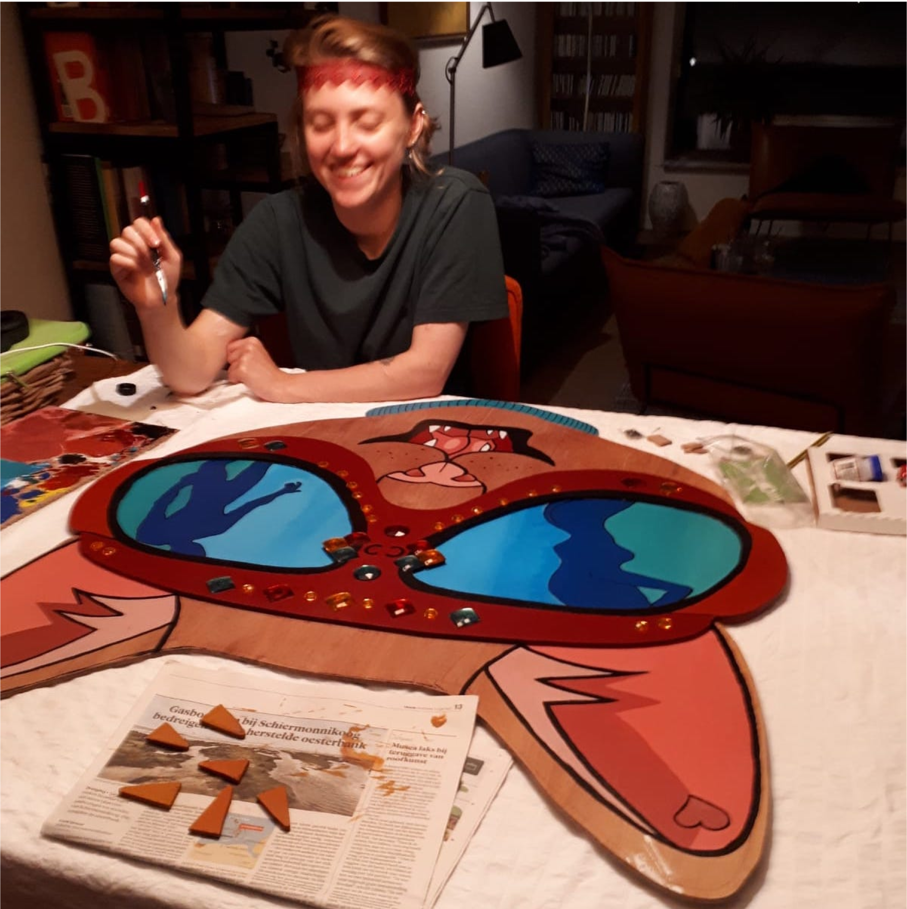
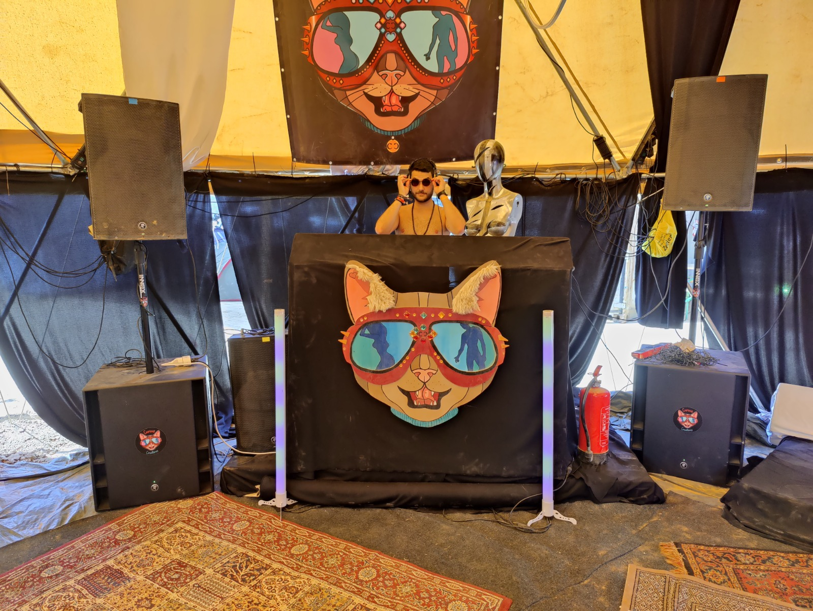
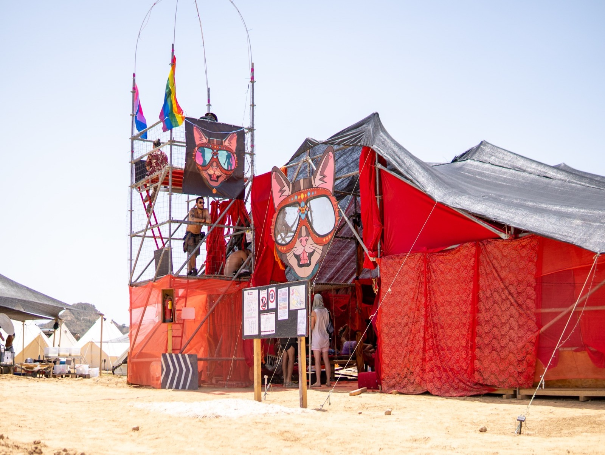
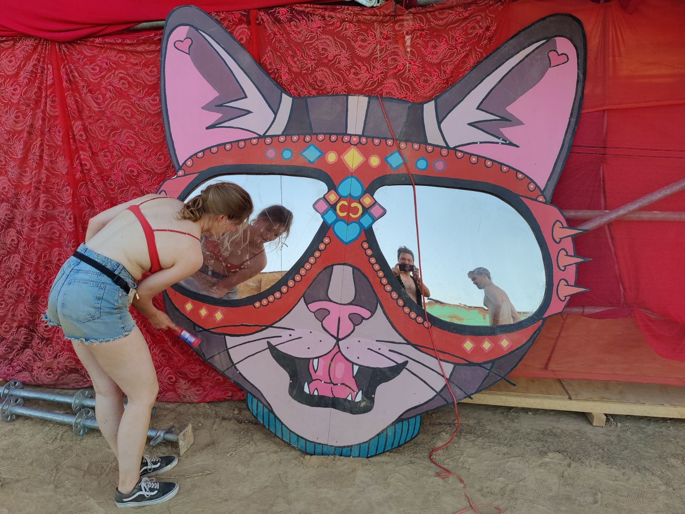
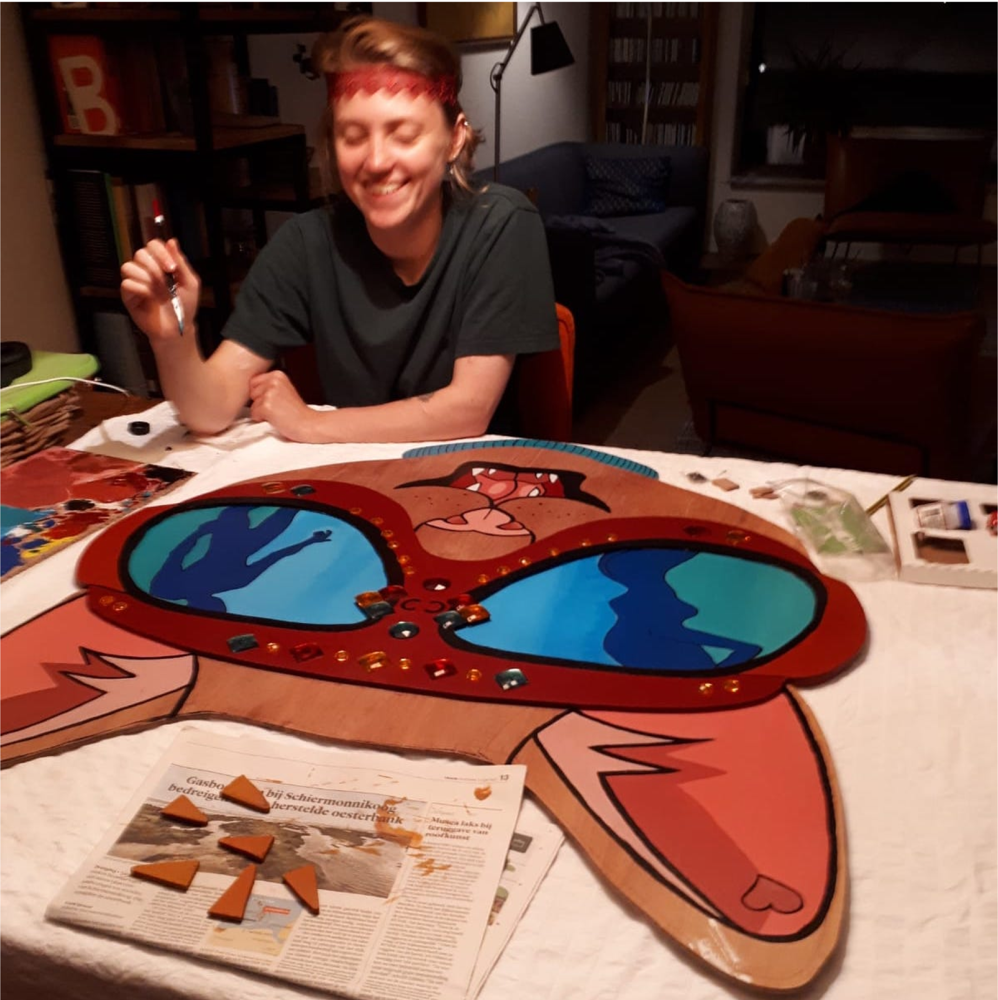
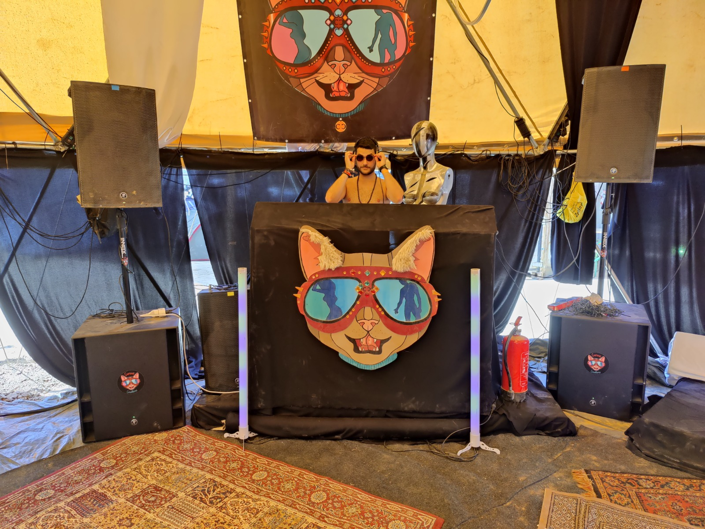
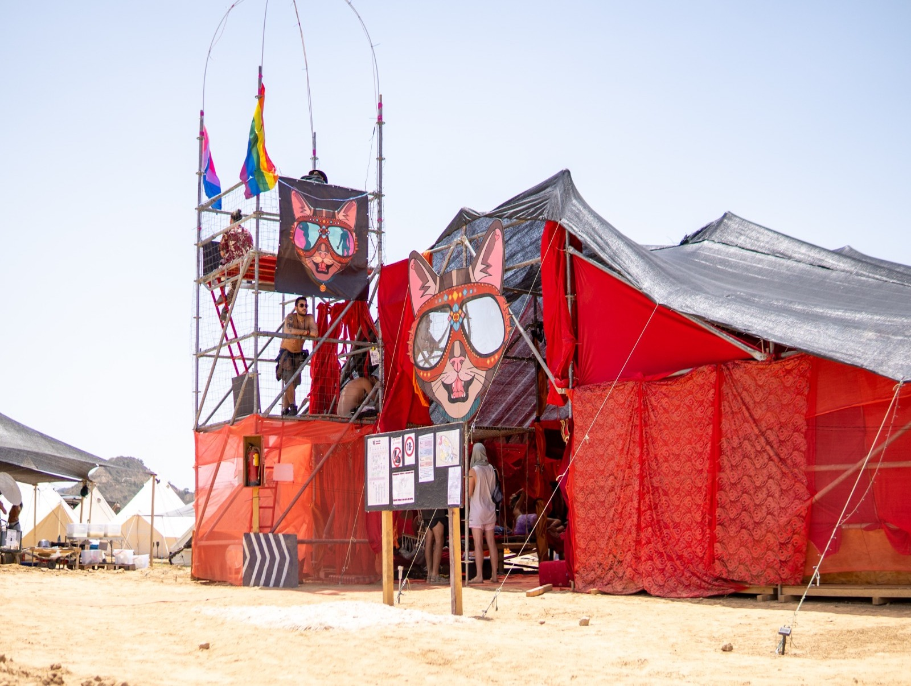
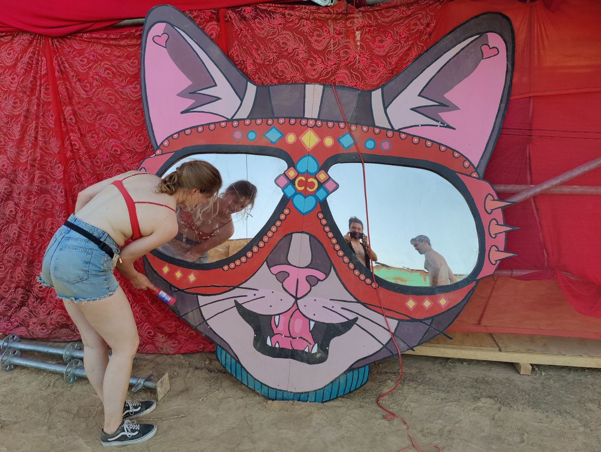

Curious Creatures
-
Opdrachtgever
Curious Creatures
-
Rol
Graphic Designer
-
Duur
1 week
-
Tools
Adobe Illustrator, pen & papier
De opdracht
Ik kreeg van vrienden de vraag om een mascotte logo te ontwerpen voor hun community. Curious Creatures is een community die feesten, festivals en workshops organiseert. Ze organiseren o.a. een kamp op het 'Going Nowhere' Burning Man festival in Spanje. Ze wilden graag een herkenbaar en leuke mascotte die hun kamp goed representeert.
Het proces
Als kernwoorden gaven ze "mysterieus", "curious", "feesten", "community". Ik heb eerst wat ideeën op papier geschetst en vervolgens een aantal van die ideeën in Adobe Illustrator overgetrokken. Het idee dat de opdrachtgever het meest aansprak heb ik verder uitgewerkt. Ik heb het ontwerp steeds verder verbeterd aan de hand van feedback.

Het resultaat
Mascot logo
Het resultaat is een mascotte van een kat met een bril op. De bril lijkt op de brillen die mensen in de woestijn op het Burning Man festival dragen als bescherming tegen de zandstormen. De kat is een curious creature. In de weerspiegeling van de bril zie je feestende mensen die de kat uitnodigen op de dansvloer.


 







Reflectie
Ik vond het een erg leuk project om aan te zitten. Het logo wordt nog steeds door Curious Creatures gebruikt en zie ik terugkomen in stickers, patches, posters, armbandjes en mokken.